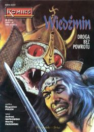
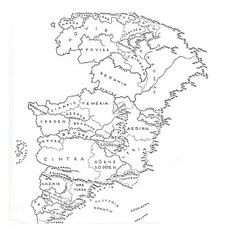

 «Відьмак» (пол. Saga o wiedźminie) — фентезійний літературний цикл польського письменника Анджея Сапковського та похідна́ франшиза. Перше оповідання циклу побачило світ у 1986 році в польському часописі «Фантастика», а останній роман був опублікований у 2013. В Україні цикл був уперше виданий у 2016—2017 роках «Клубом сімейного дозвілля» в перекладі Сергія Легези.
У творах з франшизи головним героєм зазвичай є відьмак Ґеральт з Рівії, наділений підвищеною фізичною силою, психічною витривалістю і магічними навичками, здобутими внаслідок проходження мутації (обряду ініціації)[1].
Зміст
Про франшизу
Сюжет
Мапа безіменного континенту, на якому розгортається дія Саги:

Головним героєм серії є Ґеральт із Рівії, відьмак — мисливець на чудовиськ, що становлять загрозу для життя людей. У дитинстві йому, як і іншим відьмакам, за допомогою мутацій було надано високих бойових якостей: великої сили, блискавичної реакції, прискореного метаболізму і високої регенеративної здатності.
Відповідно до власного кодексу поведінки, він намагається не брати участі в політичних інтригах королів і чарівників, однак у підсумку виявляється вплутаним в складний вузол протистояння північних королівств і могутньої південної імперії Нільфгарда. Ґеральт намагається захистити юну королівну зруйнованого королівства Цинтра Цірі (Дитя-Несподіванка), призначену йому пророцтвом ще до її народження. Цірі також стає об'єктом інтересу імператора Нільфгарда, чарівника Вільгефорца, Ложі чародійок тощо, адже її нащадку пророковано вирішити долю світу. Отримавши від своїх прийомних батьків, Ґеральта і його коханої, чарівниці Йеннефер, символічні дари-вміння: відьмацьке вправне володіння мечем і чарівницьке опанування магії, — зазнаючи важких випробувань, Цірі стає поряд з Ґеральтом головною героїнею саги.
Особливості творів
Цикл «Відьмак» відноситься до піджанру постмодерністське фентезі.
Цей напрямок за загальною стилістикою помітно відступає від канонів жанру епічного фентезі, породжуючи, близький до історичного роману, жорсткий і натуралістичний різновид. Замість чіткого поділу добра і зла, Сапковський змальовує картину жорстокого Середньовіччя, в якому ведеться боротьба народів і держав. Автор не вирізняє жодну зі сторін привабливішою та явно позитивною, а описує жахіття війни і ксенофобії. Нерідко Сапковський вдається до опису натуралістичних сцен насильства.
Одним з основних конфліктів у творі є боротьба ельфів, краснолюдів (не плутати з гномами) і дріад проти цивілізації людей, яка безжально наступає на їх середовище існування. Ельфи, традиційно позитивні в фентезійних творах інших авторів, у світі Сапковського постають зарозумілою, вимираючою расою, яка ступенем жорстокості і ненависті до інородців анітрохи не поступається людям. Загони ельфських партизанів-«білок» наводять жах на селян та ставлять їх у ситуацію, коли ті будуть покарані як за поміч повстанцям владою, так і самими повстанцями за відмову допомагати.
Головні герої постійно опиняються між двох вогнів, не намагаючись обрати якусь зі сторін.
У творі присутня яскраво виражена любовно-романтична лінія. Важлива особливість — своєрідне почуття гумору, що місцями переходить у виразну сатиру на злободенні проблеми.
До змістуКниги
- «Останнє бажання» (пол. «Ostatnie życzenie»), збірка оповідань (оригінал — 1993, переклад українською — 2016);
- «Меч призначення» (пол. «Miecz przeznaczenia»), збірка оповідань (оригінал — 1992, переклад українською — 2016);
- «Кров ельфів» (пол. «Krew elfów»; оригінал — 1994, переклад українською — 2016);
- «Час погорди» (пол. «Czas pogardy»; оригінал — 1995, переклад українською — 2016);
- «Хрещення вогнем» (пол. «Chrzest ognia»; оригінал — 1996, переклад українською — 2016);
- «Вежа Ластівки» (пол. «Wieża Jaskółki»; оригінал — 1997, переклад українською — 2016);
- «Володарка Озера» (пол. «Pani Jeziora»; оригінал — 1999, переклад українською — 2017);
- «Сезон гроз» (пол. «Sezon burz»; оригінал — 2013, переклад українською — 2017);
Окремо написані оповідання «Дорога, з якої нема вороття» (пол. «Droga, z ktorej sie nie wraca», 1988) і «Щось закінчується, щось починається» (пол. «Coś się kończy, coś się zaczyna», 1992), які прямо не належать до циклу про Відьмака, але дія яких розгортається в тому самому всесвіті.
Також існує дві схвалені Сапковським антології від сторонніх авторів:
- «Відьмачі легенди» (пол. «Opowieści ze świata Wiedźmina», 2013) — польська збірка творів українських та російських письменників;
- «Пазури й ікла» (пол. «Szpony i kły», 2017) — збірка творів учасників літературного конкурсу з нагоди тридцятиріччя «Відьмака».
Переклади українською
У 2012 році стало відомо, що правами на публікацію серії «Відьмак» вже кілька років володіло вінницьке видавництво «Теза».[2] Були готові українські переклади перших двох книг, виконані Оленою Кислою, проте вони так і не були видані через закінчення строку дії прав.
Перше оповідання з серії «Відьмак» було опубліковане українською в журналі «Всесвіт» у № 08 (740) за 1990 рік в перекладі Миколи Рябчука.[3] Повністю ж офіційний переклад українською всіх 8-ми книг серії «Відьмак» з'явився лише у 2016[4]-2017 роках у видавництві «КСД» у перекладі Сергія Легези.
Оповідання
- Анджей Сапковський. Відьмак (оповідання). Переклад з пол.: Микола Рябчук. Київ: Журнал «Всесвіт». № 8 (1990). Київ: Молодь, 1991. 256 с. (Пригоди. Подорожі. Фантастика — 91).
- Анджей Сапковський. Дорога, з якої нема вороття. Переклад з пол.: Ореста Ткачук. Київ: Журнал «Всесвіт». 1993. № 2 (770)
Переклади видавництва «КСД»
- Анджей Сапковський. Відьмак. Останнє бажання. (Книга 1). Переклад з пол.: Сергій Легеза. Харків: Клуб сімейного дозвілля, 2016. 288, ISBN 978-617-12-0499-7
- Анджей Сапковський. Відьмак. Меч призначення (Книга 2). Переклад з пол.: Сергій Легеза. Харків: Клуб сімейного дозвілля, 2016. 368 с. ISBN 978-617-12-0498-0
- Анджей Сапковський. Відьмак. Кров Ельфів (Книга 3). Переклад з пол.: Сергій Легеза. Харків: Клуб сімейного дозвілля, 2016. 320 с. ISBN 978-617-12-1037-0
- Анджей Сапковський. Відьмак. Час Погорди (Книга 4). Переклад з пол.: Сергій Легеза. Харків: Клуб сімейного дозвілля, 2016. 320 с. ISBN 978-617-12-1038-7
- Анджей Сапковський. Відьмак. Хрещення вогнем. (Книга 5). Переклад з пол.: Сергій Легеза. Харків: Клуб сімейного дозвілля, 2016. 384 с. ISBN 978-617-12-1488-0
- Анджей Сапковський. Відьмак. Вежа Ластівки. (Книга 6). Переклад з пол.: Сергій Легеза. Харків: Клуб сімейного дозвілля, 2016. 400 стор. ISBN 978-617-12-1656-3
- Анджей Сапковський. Відьмак. Володарка Озера. (Книга 7). Переклад з пол.: Сергій Легеза. Харків: Клуб сімейного дозвілля, 2017. 576 стор. ISBN 978-617-12-3114-6
- Анджей Сапковський. Відьмак. Сезон гроз. (Книга 8). Переклад з пол.: Сергій Легеза. Харків: Клуб сімейного дозвілля, 2017. 352 стор. ISBN 978-617-12-3396-6
Адаптації
Відеоігри
Польська компанія «CD Projekt RED» створила серію з трьох відеоігор про пригоди відьмака Геральта:
- The Witcher (укр. «Відьмак», 2007 р.),
- The Witcher 2: Assassins of Kings (укр. «Відьмак 2: Вбивці королів», 2011 р.),
- The Witcher 3: Wild Hunt (укр. «Відьмак 3: Дикий Гін», 2015 р.).
Крім основної трилогії, існує кілька відеоігрових спінофів у інших жанрах:
- The Witcher Adventure Game (пол. Wiedźmin: Gra Przygodowa, укр. Відьмак: Пригодницька гра; 2014 р.),
- Thronebreaker: The Witcher Tales (пол. Wojna Krwi: Wiedźmińskie Opowieści, укр. Кровна ворожнеча: Відьмацькі історії; 2018 р.)
- Gwent: The Witcher Card Game (пол. Gwint: Wiedźmińska gra karciana, укр. Гвинт: Відьмацька карткова гра; 2018 р.)
- Gwent: Rogue Mage (пол. Gwint: Mag Renegat, укр. Гвинт: Маг-відступник; 2022 р.)
Екранізації
За мотивами творів у 2002 році вийшов 13-серійний телесеріал «Відьмак», створений польською телестудією Heritage Films та режисером Мареком Бродським. Роль Геральта зіграв Міхал Жебровський. Також роком раніше було випущено змонтований з матеріалів серіалу 130-хвилинний фільм.
У 2017 році вебсервіс Netflix почав розробку телесеріалу за мотивами книг про відьмака. 20 грудня 2019 року вийшов перший сезон серіалу-адаптації від Netflix, вісім епізодів, тривалістю 1 година кожна. Сам серіал був зустрінутий змішаними відгуками критиків (55 % рейтингу на Rotten Tomatoes[6]), але мав хороші рейтинги серед глядачів і був продовжений на другий сезон ще до виходу.
Після успіху серіалу Netflix анонсував кілька приквелів: мультфільм «Відьмак: Кошмар Вовка», чия прем'єра відбулася 23 серпня 2021 року, і мінісеріал «Відьмак: Кровне походження», який вийде не раніше 2022 року.
Комікси
Польська «книжкова» серія
З 1993 по 1995 роки за творами Сапковського було випущено 6 коміксів за авторством Мацея Паровського (автор тексту) та Богуслава Польха (художник):
- «Дорога без вороття» (пол. Droga bez powrotu),
- «Ґеральт» (пол. Geralt),
- «Менше зло» (пол. Mniejsze zło),
- «Останнє бажання» (пол. Ostatnie życzenie),
- «Межа можливого» (пол. Granica możliwości),
- «Зрада» (пол. Zdrada).
При цьому комікс «Зрада» базується на неопублікованому оповіданні Сапковського про учнівство юного Ґеральта та має певні відступи від канонічних відомостей. Решта ж досить точно передає першоджерело.
Малюнок виконаний грубими лініями, нечіткими мазками та зі застосуванням пригашених відтінків бурого, жовтого та чорного.
Були перевидані в 2001 і 2015 роках.[7]
Польська «ігрова» серія
Під час розробки першої відеогри «The Witcher» польська студія CD Projekt RED мала намір створити в 2007 році новий комікс на основі творів літературної серії «Відьмак», однак проєкт не був доведений до кінця. Художником коміксу був Пшемислав Трусчинський, сценаристом — Матей Паровський.[7]
В 2011 році в рамках рекламної кампанії відеогри «The Witcher 2» з'явилася графічна новела в двох частинах «Благо народу» (пол. Racja stanu), створена колективом польських авторів: Міхалом Галеком, Аркадіушем Клімеком та Лукашем Поллером.[7][8] Події у ній розгорталися через 2 роки після битви при Соддені. Комікс можна було безкоштовно отримати в AppStore.[9]
Також у деяких регіонах покупці що перед-замовили DLC «Серця з каменю» (англ. Hearts of Stone, пол. Serca z kamienia) до гри The Witcher 3: Wild Hunt, безкоштовно отримали e-book версію коміксу «Докори сумління» (англ. Matters of Conscience; пол. Rachunek sumienia); хоча у деяких регіонах замість «Докорів сумління» покупці отримали комікс «Вбиваючи чудовиськ» (англ. Killing Monsters) від видавництва «Dark Horse Comics». Комікс розповідає про те, як між подіями другої та третьої ігор Геральт повертається в Ферген та приймає замовлення від Саскії, Діви з Едірну.[10][11][12] Дія коміксу розгортається в часовому проміжку між II та III частиною відеогри «Відьмак».[13]
Серія від Dark Horse Comics
З 2014 видавництво «Dark Horse Comics» випускає серію графічних романів про відьмака Ґеральта. На 2022 рік уже вийшли такі томи:
- «Дім зі скла»,
- «Відьмак: Лисячі діти»,
- «Прокляття воронів»,
- «Плоть і пломінь»,
- «Тьмяні спогади»,
- «Відьмин лемент»,
- «Зерно правди» (адаптація оповідання Сапковського «Дещиця істини»).
21 грудня 2022 року у продажу з'явиться перший випуск тому під назвою «Балада про двох вовків».[14]
Переклади українською
У 2018 році Видавництво «Vovkulaka» отримало ексклюзивні ліцензійні права на переклад цієї серії коміксів Dark Horse Comics українською мовою.[15]
- Відьмак. Дім зі Скла : графічний роман / Пол Толбін ; пер. з англ. Микити Янюка. — Київ : Вовкулака, 2018. — 136 с. — УДК 821.111(73)'06-31. — ISBN 978-966-97753-4-4.
- Відьмак. Лисячі діти : графічний роман / Пол Толбін ; пер. з англ. Микити Янюка. — Київ : Вовкулака, 2019. — 136 с. — УДК 821.111(73)'06-31. — ISBN 978-617-7782-04-8.
- Відьмак. Прокляття воронів : графічний роман / Пол Толбін ; пер. з англ. Микити Янюка. — Київ : Вовкулака, 2020. — 128 с. — УДК 741.5:821.111(73)'06-31. — ISBN 978-617-7782-07-9.
- Відьмак. Плоть і пломінь : графічний роман / Александра Мотика ; пер. з англ. Микити Янюка. — Київ : Вовкулака, 2021. — 104 с. — УДК 811.111(438)'06-31:741.5. — ISBN 978-617-7782-11-6.
- Відьмак. Тьмяні спогади : графічний роман / Бартош Штибор ; пер. з англ. Микити Янюка. — Київ : Вовкулака, 2022. — 104 с. — УДК 821.162.1'06-3:741.52]=111. — ISBN 978-617-7782-30-7.